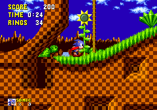

This report focuses on a heuristic analysis of Sega: Sonic The Hedgehog from 1991.
Given that the game is 27 years old this game provides an interesting lens to look
at HCI through due to the limitations of the time and the simplicity of the interface.
The HCI of Sega's Sonic is incredibly simplistic revolving around 5 main aspects. In
the center of the screen the game situates the player, a scrolling camera ensures that
the player is always in the center of the screen. There are also 4 interface elements,
a counter for the number of lives in the bottom left of the screen, as well as the players
score, time taken and ring count.
